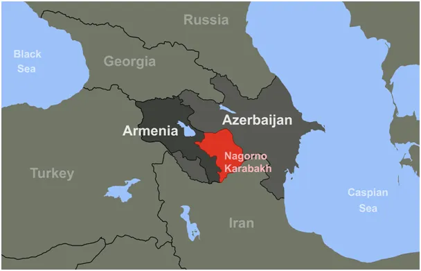
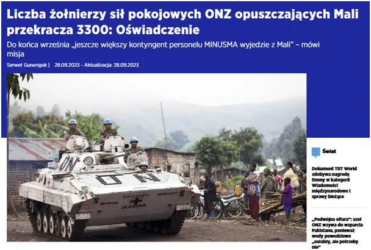
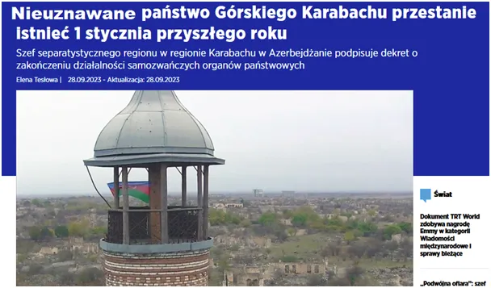

Wielka zdrada czy handel bantustanami? Mali i Górny Karabach sprzedane?
Mali to francuska strefa wpływów, gdzie za zgodą ONZ, czyli USA Francuzi drenują lokalne bogactwa, w tym złoto od wieków. Od kilku lat wycofują się pod naporem lokalnych sił, nie tylko politycznych. Malijczycy strzelają do uzbrojonych żołnierzy przysłanych przez ONZ, którzy mieli pilnować, aby wywóz surowców szedł pełną parą. Po stracie 180 najemników zachód uznał, że jest tam zbyt niebezpiecznie. Widać, że decyzja zapadła w USA o tym, że nie wspieramy francuskich inwestycji w Afryce.
Lokalne władze i francuskie firmy sprzyjające zachodowi zostaną na lodzie. Partyzantki lokalne zobaczą, że napadanie na posterunki ONZ przynosi skutki i zapewne ośmielą podobne siły w innych krajach. Zachód, w lewackim widzie, nie jest zdolny do utrzymywania swych wpływów z powodu potencjalnych ofiar. Gdyby Rzym tak postępował Hunowie zajęliby go w tydzień.

USA jest szczególnym zakładnikiem takiej postawy. Nadchodzi rok wyborczy i amerykanie nie zaryzykują jednego martwego marines, dlatego tak sprawnie wystawiają na fronty "lokalnych demokratów".
Właśnie trwa marsz przez góry Górnego Karabachu 30 tyś. Ormian, którzy nie chcą zostać po Azerskiej stronie, bo doszło do umowy pokojowej miedzy Azerbejdżanem i Armenią. Partyzantka ormiańska w enklawie na terenie Azerbejdżanu poddała się na dobrych warunkach. Na jedwabnym szlaku powstaną drogi i mosty, droga z Europy do Iranu zostanie odblokowana, ruszy handel, poziom życia na środkowym wschodzie się podniesie.

"Misja ONZ w Mali powstała 25 kwietnia 2013 roku w odpowiedzi na kryzys bezpieczeństwa, który wybuchł w Mali. W misji tej wzięło udział ponad 15 000 żołnierzy i funkcjonariuszy policji z 61 krajów, od Armenii po Zambię. Siły pokojowe stacjonowały głównie w północnym i środkowym Mali.
Rząd Mali zwrócił się do ONZ o wycofanie misji z kraju do 30 czerwca. Misja straciła dotychczas ponad 180 swoich członków."
https://www.aa.com.tr/en/africa/number-of-un-peacekeepers-leaving-mali-exceeds-3-300-statement/3002620
Paweł Klimczewski